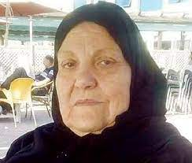
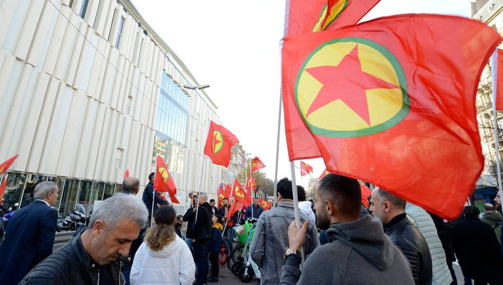
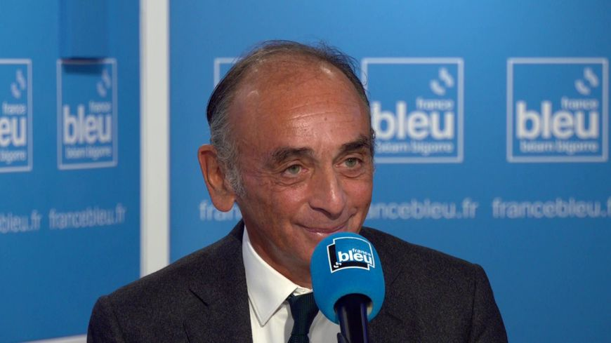

Zineb Redouane
More Info
Zineb Redouane est morte en décembre 2018 à l'âge de 80 ans. Lors d'une manifestation, celle-ci s'est vue la victime d'une grenade lancée par un policier lorsqu'elle a souhaité fermé la fenêtre de son appartement, personne n'a été suspendu ou inculpé pour cette mort.
Massacre des Rohingyas

More Info
Après avoir été infligés des graves violences en 2017 par les forces armées birmanes , plus de 700.000 Rohingyas sont devenus réfugiés. Amnesty International accuse le groupe META d'avoir propagé les messages de l'armée du Myanmar et leur demande des réparations.
Insulte raciste à l'Assemblée nationale
More Info
Le 3 novembre 2022, le député du rassemblement national Grégoire de Fournas a tenu des propos discriminatoires à l'encontre du député de la France insoumise Carlos Martens Bilongo qui prenait la parole. Le député du RN accuse la France insoumise de manipulation.
Samuel Umtiti visé par des cris de singe
More Info
Le 4 janvier 2023 Lazio se voit défait 2 buts à 1 par Lecce en Italie dans un match tournant à la discrimination. Pendant le match, plusieurs fois, se font entendre cris de singe proliférés à l'encontre du joueur français Samuel Umtiti et de son coéquipier Lameck Banda.
Communauté kurde se mobilise
More Info
Suite à des coups de feu visant un centre culturel Kurde le 23 décembre 2022, le conseil démocratique kurde a fait l'appel d'une manifestion le lendemain à la place de la république. Des rassemblements spontanés ont eu lieu dans plusieurs grandes villes de France.
Condamnation de Zemmour
More Info
Le 20 décembre 2022, Eric Zemmour a été condamné pour des propos discriminatoires tenus sur France 5 en 2016. Ce dernier écopera d'une amende de 3000 euros. Il avait contester l'aspect discriminatoire des ses propos de haine religieuse envers la communauté musulmane.